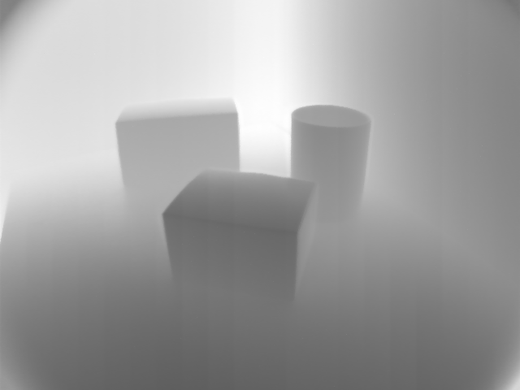
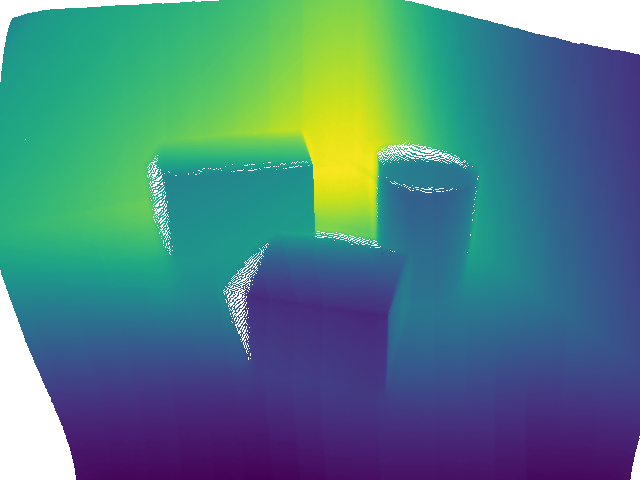

|
IDS peak ICV v1.5.0
|
|
IDS peak ICV v1.5.0
|
A point cloud is a set of data points defined in a three-dimensional (3D) coordinate system. Each point is represented by its X, Y, and Z coordinates, specifying its exact position in 3D space. Point clouds are often generated from depth maps, such as those obtained from a time-of-flight camera. They serve as a detailed digital representation of the shape and size of physical objects, enabling precise measurements and analysis.
The result of a Camera Calibration is needed to create a point cloud from a depth map image. This depth map can originate from a time-of-flight camera, for example. Its gray values represent distances in metric units. For more information see the Camera Calibration Guide.
| Depth map | Point cloud |
|---|---|
 |  |
To create a point cloud using one of the provided interfaces, follow the steps below:
Creating a point cloud from a depth map involves two main steps:
Both steps require the camera's intrinsic calibration parameters. First, load these parameters into an instance of CalibrationParameters.
The Undistortion class is used to transform a distorted depth map into an undistorted version. To use it, instantiate the class with the appropriate intrinsic parameters. The process function performs the undistortion on the provided image and returns an UndistortedImage object. This returned object contains the undistorted image along with the intrinsic parameters.
Generate the point cloud by instantiating the class with the undistorted depth map obtained in the previous step. The 3D coordinates are computed using the camera matrix derived from the intrinsic parameters.